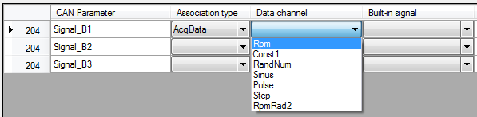
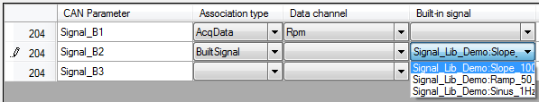
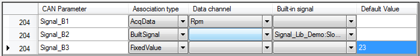

Main purpose of an association file is to associate CAN parameters with data channel. Actually, a CAN parameter can be associated with something else than a data channel.
There are four types of association:
Click on ‘Association type’ cell of a CAN parameter and pick up the association that you want to use.

Once the association type defined, select the data channel or built-in signal in the corresponding cell.


For a ‘Fixed value’ association simply type a value into the ‘Default value’ cell.

Several CAN parameters can be associated with the same data channel or built-in signal.
Once all associations are set click the ‘Save’  button of the tool bar to save the association file.
button of the tool bar to save the association file.
Created with the Personal Edition of HelpNDoc: Full-featured EBook editor